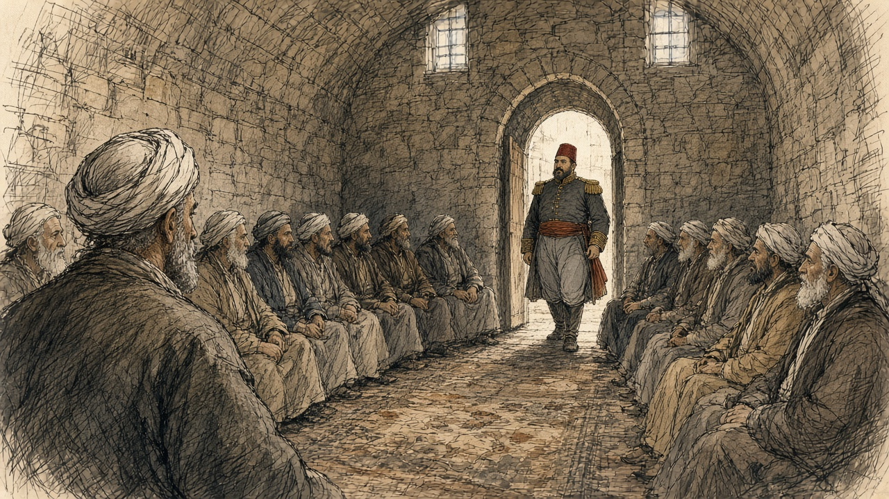
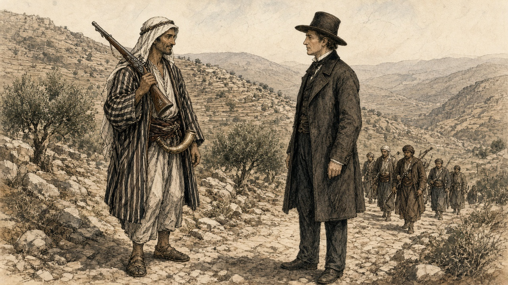
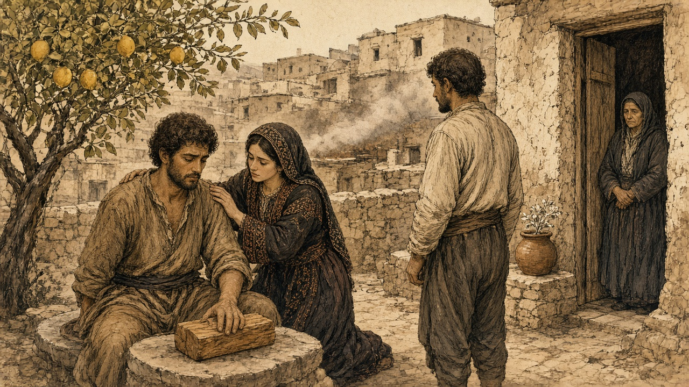
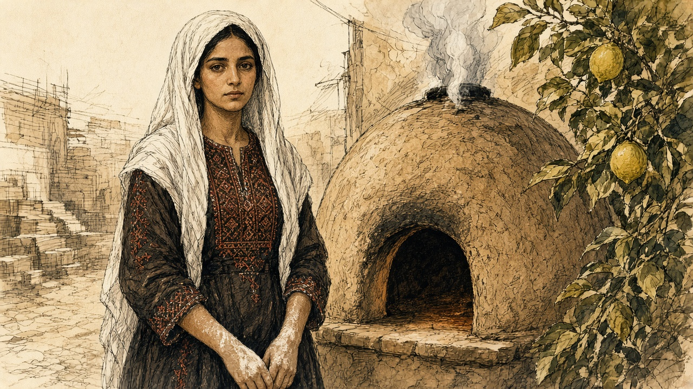
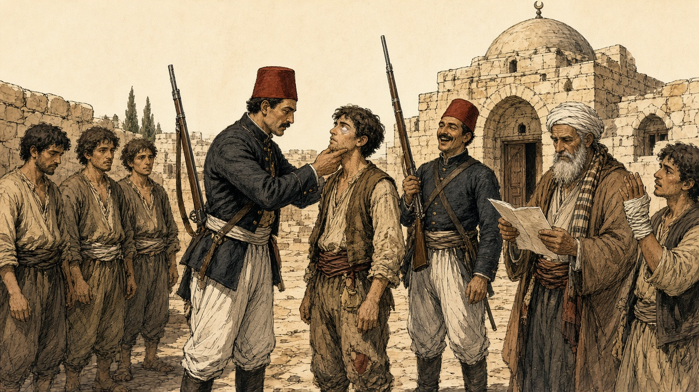
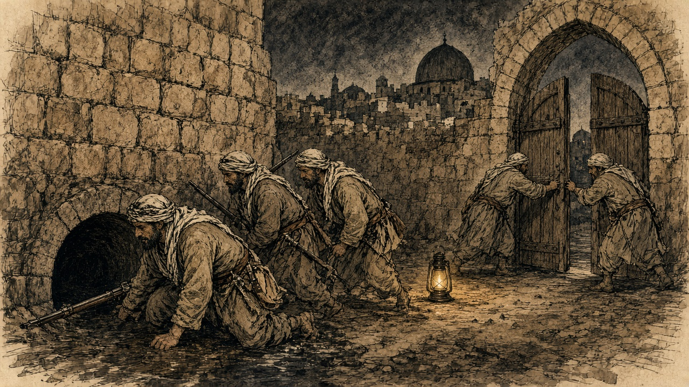
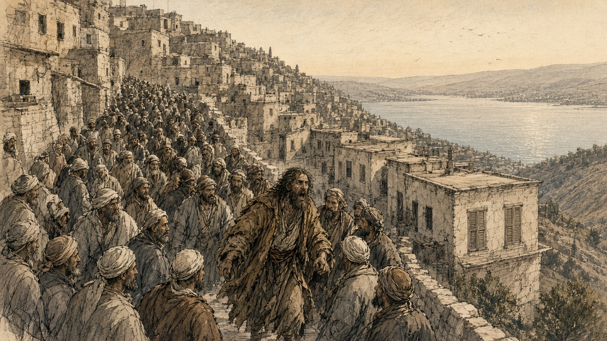
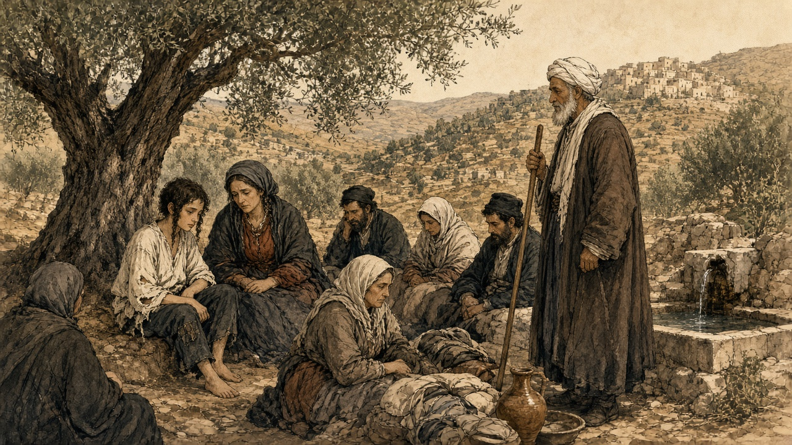
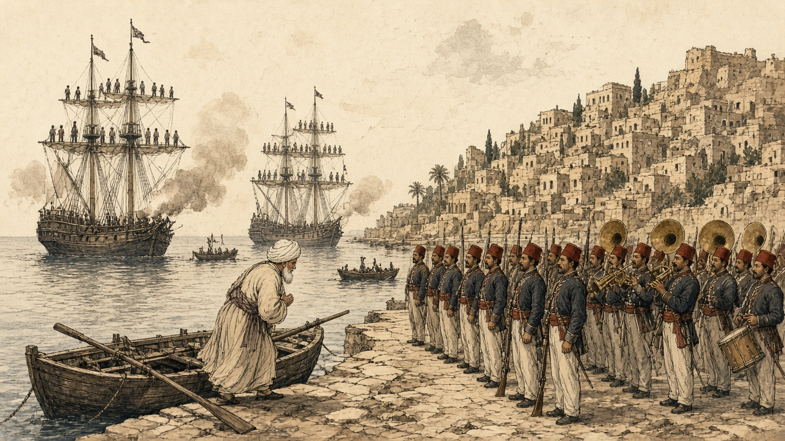
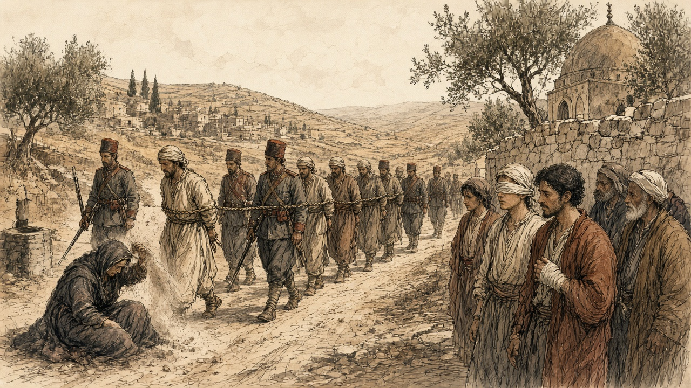

Chapter 22
Ledger and Mob, Galilee, 1831–1840
Jerusalem, the hills of Nablus and Hebron, and Safed in the Galilee
In the autumn of 1831 an Egyptian army came up the coast road out of Sinai. At its head rode Ibrahim Pasha, eldest son of Muhammad ʿAli Pasha, the governor of Egypt, who was still in theory a servant of the Ottoman sultan and in practice nobody's servant at all. Muhammad ʿAli gave a reason for the invasion that sounds almost like a clerk's complaint. Egyptian peasants had been running north into Syria for years to escape his draft, and he wanted them back. Judith Mendelsohn Rood, who has spent a career inside the Jerusalem court registers, calls that reason a ruse. By the following year Ibrahim held Acre, Damascus, and everything between them and the Egyptian border.
Most of the people he now governed did not mourn the change at first. Rood records that they were glad to be rid of ʿAbdullah Pasha, the Ottoman governor at Acre, whose rule they remembered as tyranny. For decades the Porte in Istanbul had run this coast through strongmen. Ahmad al-Jazzar had held Acre with his own soldiers and his own tax arrangements until he died in 1804. Muhammad Abu Nabbut held Jaffa in the years after. Such men answered to the sultan when the sultan was looking, and sent money when money could not be avoided.
Ibrahim brought something the strongmen never had. His troops were the نظام nizam, the new order, peasant conscripts drilled in European fashion, in short jackets, armed with muskets loaded from paper cartridges. Behind the troops came a bureaucracy that answered to Cairo, and a ledger that reached into the village.
Rood reads the change through the سجلات sijillat, the registers of the Islamic court in Jerusalem, and what she finds there is a contract being broken. Under the Ottomans the courts spoke of "repose and tranquility." A just ruler kept order and took just taxes, and a ruler who failed to protect his subjects from disorder and arbitrary taxation lost the right to rule. Inside that frame every class had its place. The Muslim scholars and administrators of Jerusalem, the ʿulama, paid no taxes at all. The Bedouin guarded the roads and the pilgrim traffic and were paid portage and toll fees for it, and so was the Abu Ghosh family in the hills west of the city. Christians and Jews paid the jizya and were spared military service. The fallahin farmed and paid and, when trouble came over the hill, picked up the family musket and went out with their sheikh for a day or a week, and then came home to the harvest.
Muhammad ʿAli's government pulled at every corner of that arrangement at once. Across Syria the religious endowments, the waqfs, were reorganized, and Cairo took control of the revenues of the Waqf al-Haramayn, the endowment for the holy cities of Mecca and Medina. The ʿulama lost powers they had held under the sultan, and Jerusalem's Muslim administrative class, men who had never paid a tax, were handed a new one. The Bedouin and the Abu Ghosh family lost their tolls on the roads. On top of everything came the فردة farda, a head tax. The jizya from Christians and Jews went on being collected as before.
In April 1834 Ibrahim summoned the leaders of Jerusalem and Nablus to Jerusalem and told them what he wanted next.
* * *
Jerusalem, April 25, 1834
Cold, the stone of that hall, and the carpets under-us thin. Came-up-we from the hills of Nablus two days on the mule, I and the son of the uncle of my wife, and the dust of the road still in our beards. In the front of the room sat the great-ones of the city. The mufti, Tahir Afandi al-Husayni, and beside-him ʿUmar Afandi al-Husayni, the naqib of the descendants of the Prophet, and the bashkatib of the court, Muhammad ʿAli al-Khalidi, the man who writes the judgments. Behind-them the sheikhs of the country. Qasim al-Ahmad of Jabal Nablus, a man the whole mountain knows his voice. ʿIsa al-Amr from the side of Hebron. And behind-them, men like-me, sheikhs of villages that the pasha knows-not their names.
Small, my village. Forty houses and a spring of water, and trees of olive that the grandfather of my grandfather planted-them. Why called-they-me to Jerusalem, wallah, knew-I-not. After-that knew-I.
Came-in the pasha. Not old in the years, Ibrahim, and thick in the body, and his eye turning over-us the way a buyer turns his eye over the sheep in the market of Nablus. Sat-he, and wasted-not the time.

"As we, Muslims, to-us are enemies perpetual from the nations of the Nazarenes, necessary or not necessary is-it that to-us be an army standing great?"
What say-you in this? The great-ones said yes. Without doubt necessary. After-that asked-he-them from whom shall-be-taken the army, from the Christians or from the Muslims, and said-they, from the Muslims, assuredly. And understood-I then that walked-he-us into a room and shut its door behind-us, and that the door, opens-it only from his side.
Wants-he the young-men. Two hundred from the city of Jerusalem first thing. Three thousand and five hundred from the districts of Jerusalem and Nablus. Five hundred from Hebron. A man from every five, said the men who heard-it better than-me. They-learn the craft of the war from their youth, said-he, and be ready.
Fell a silence on the room. Long, that silence. Counted-I my breath, and thought-I in the boys of my village, and their names passed through-me one after one like beads of the misbaha between the fingers. After-that the great-ones answered, and their answer was soft in its beginning and hard in its end.
"Your order upon our heads," said-they. "There-is-not need that we-hand-over our boys and our young-men for the war. When the enemy of our religion enters our land, all-of-us, young and old, go-out and fight and give our blood willingly…"
This the truth that knew-we-it. Thus fought our fathers. Thus fought the grandfathers of our fathers against the French, when the Franks came-up to Acre in the time of al-Jazzar. The man takes his musket from the wall and goes, and fights beside his brother and the son of his uncle, thumma returns-he to his house. To the land of the Arabs goes-he-not, nor to the Yemen, and never forever.
Asked the pasha how want-we we-make war if know-not-we its craft. Told-they to-him that this craft our grandfathers knew-it, and we know-it. And said the pasha a word that carried-I-it with-me on the mule like a stone in the saddlebag.
"The war is not a place for a herd of men useless: craft and skill are required. This order want-I it carried-out without delay, and from here from Jerusalem we-begin."
A herd. Sheep, his meaning. Thus looked-he in-us, thus named-he-us.
The great-ones bowed and asked the permission they-return to their districts they-carry-out the order. Bowed-I with-them. Ya rabb, and what other-than this? And on the road of the return the son of my uncle spoke-not one word until saw-we the lights of Nablus, and in-that-hour said-he, "Will-take-they Hasan. Will-take-they the son of your sister. Will-take-they every one that not-yet his beard has-come-out."
* * *
Jerusalem and the hill villages, spring 1834
Ibrahim left Jerusalem for Jaffa three days after the meeting, on April 28. Behind him the order moved out into the villages faster than he did.
The men who heard it knew what the nizam meant. Rood is plain about it: Muhammad ʿAli's conscripts were inducted for life, with no hope of return, and in 1834 they were being sent to fight in Arabia and in the Yemen. A son taken for the army was a son lost to the plough and the olive press, and to his mother, for good. When the Nablus men talked among themselves about what to do, the chronicle Spyridon published records the sentence that came out of those talks. It was better, they said, to die with their arms than to give their children to everlasting slavery without the hope of ever seeing them again.
An American missionary named William Thomson, posted in Jerusalem that spring, wrote on May 19 that he had "met many fellaheens, armed and equipped for war." He asked one of them, a man come down from the hills, whether he was out shooting birds. The answer went into Thomson's letter word for word. "With a bitter smile, he said, my birds are in Jaffa, and my lead is for the Pasha."

Thomson also wrote down a grievance he called "ridiculous enough," though he admitted it said something about the people. The pasha's recruiters shaved off the conscripts' long beards and put them in the nizam dress, "very much like the Frank," and those two things, Thomson wrote, were "an abomination in the eyes of the people." One poor woman complained to him bitterly that the pasha "made them all become young again."
Some families did not wait for the recruiters. In Egypt, where Muhammad ʿAli's draft had been running for a decade, the historian Khaled Fahmy found young men in the archives of the army who had made their own bodies useless to it. A musket has to be aimed, and so they put caustic lime or needles into an eye. A trigger is pulled by the index finger of the right hand, and so they cut that finger off. A paper cartridge has to be bitten open to pour the powder down the barrel, and so they pulled out their front teeth. Rood found the same desperation reported in Syria: men blinding themselves in one eye, cutting off a hand.
* * *
A village in the hills between Nablus and Jerusalem, the end of April 1834
The morning the cold, and the smoke of the ovens of the bread low over the roofs. Under the tree of the lemon in the courtyard of my father, sat Hasan on the stone of the threshing, and his hand the right laid flat on the block of wood of the olive that we-split on-it the firewood. Hasan, habibi. Since the day were-we boys grazed-we the goats together, and together ate-we the beating with the stick of the same uncle.
At the doorway stood my mother, her-two-hands inside her sleeves. Spoke-not-she. Not-one spoke. The sheikh had-returned from Jerusalem before two days, and since that-day the village all-of-it speaks-not except in the whisper, the way the people speak in a house that in-it someone dying.
Beside-me on the wall-stones, the pot the small of the lime. White, the lime, the lime of the kiln that we-burn-it for the plaster of the roofs. Wet-it with the water, and boils-it by-itself. My grandmother used to say to-us when we small, put-not your hand in the lime, it eats. Now knew-I what it eats.
Zahra, the wife of Hasan, came-she and knelt behind-him and put her-two-hands on his shoulders. Young, Zahra, married-to-him one winter only. Her face white like the lime.

"Bismillah," said Hasan.
Said-he-it the way the man says-it before he-lifts a stone heavy, and the son of his uncle came-down with the hatchet. Its sound, will-tell-I-it-not. Only that it-was short, and that Hasan made in his chest a groaning like a dog held by his neck and wants-not he-howl, and that Zahra had-ready the rag, the rag that tore-she-it from her head-cloth, and wrapped-she his hand and pressed-it against her chest, and spoke-she in his ear the words that the woman speaks-them to a child on-him fever. Ya habibi. Ya habibi. Al-hamdu lillah, it-finished. It-finished.
After-that looked-they in-me.
My eye, hung-it on Amina, core of my heart. Stood-she at the bread-oven and the flour still on her arms, and turned-not-she her face, because I had-asked from-her this that night. Let the last thing sees-it this eye, be you. Her face a moon. Her beauty sufficed-me it-give-me strength, al-hamdu lillah, for my sight going after-him. Scarcely perceived-I the groan of habibi holding-in his pain, knowing that Zahra beside-him comforting-him. And was-she at-there steadying-him.

Wetted-I my fingers in the water of the jar. Took-I the lime. Named-I with the name of God, and held-I my eye the left open with my hand the left, and put-I-it in-it.
Burned-away the sight.
What remember-I after-it: its fire, and a smell like smell of a wall after the rain, and my voice that knew-I-it-not, and my mother who came-out in-that-hour, at-the-last, from the doorway, and poured water and water and water over my face from the jar, and wept a weeping that hear-I-it still. The hand of Amina on my wrist. Hasan laughing, wallah, laughing and weeping together, saying, now became-we brothers twice, ya akhi, now became-we brothers twice.
Five days the eye wept. On the sixth untied-I the cloth, and on that side was-not except light, a whiteness like the morning before the sun, and inside-it nothing.
After-that came the day. Came the sheikh to the square with-him the paper, the same sheikh that went to Jerusalem, and with-him two-men from the nizam in their jackets the short, and the young-men stood a line beside the wall of the mosque. Read-he the names, and lifted-not his eye from the paper while he reading-them. His voice the voice of a man reading his grave.
Called-they my name.
Stepped-out-I to-front. The soldier took my chin in his hand and turned my face to the sun and looked into the eye, the burned-one, and after-that into the second, and feared-I a fear great that the eye the sound betray-me. Said-he something in the speech of Egypt to his fellow, and his fellow laughed, and pushed-he-me back against the wall. After-that the name of Hasan, and Hasan held-up his hand the right in the rag of Zahra, and the soldier unwrapped-it-not even, bal waved-he to-him he-go-back with two-fingers like a man brushing-off a fly.

Eleven names, the paper of the sheikh. Nine from-them whole. Eleven mothers know-I their faces. That night the nine took the guns from the walls of their fathers and went-up into the mountain, and among-them the son of my aunt, and not-one in the village saw-them going-up, wallah, not-one.
Smell-I the lemon. Even now, with the eye the one, at end of the day, while I sitting under the tree of the lemon of my father, smell-I-it, and see-I Amina at the bread-oven and the flour on her arms, and that the last picture at the eye the left, and keeps-it-she.
* * *
Jerusalem, May 1834
By the middle of May the villages were done with whispering. The rising began in the east, at Salt across the Jordan, where peasants and Bedouin joined against the Egyptian garrison, and then the Taʿamira Bedouin of the Bethlehem country joined the villagers of Saʿir in the Hebron hills and beat the troops of the Egyptian governor of that district. On May 8, by Rood's chronology, armed villagers surrounded Jerusalem and barred its gates, ten thousand men from Nablus, Hebron, Jerusalem, and Gaza. Soldiers on the walls drove back their first assault. Five days later the ground shook. A report Rood quotes says Jerusalem's Muslims believed the earthquake had been "caused by Ibrahim Pasha's attempt to take soldiers from that sacred city—a thing never attempted before."
The fighting stopped for five days. On May 19 people from Silwan, the village on the slope below the southern wall, showed the rebel leaders an abandoned sewer that ran from near the Dung Gate, باب المغاربة Bab al-Maghariba, into a mill inside the city. The next day thirty-six peasants and Jerusalemites crawled through it, came up within the walls, went to the gate, and threw it open from the inside. The commander of the garrison, Rashid Bey, pulled his troops back into the قلعة qalʿa, the citadel by the Jaffa Gate. On May 21 he arrested the mufti Tahir Afandi, the naqib ʿUmar Afandi, and the bashkatib Muhammad ʿAli al-Khalidi, the same men who had sat across from Ibrahim less than four weeks before. When townspeople opened the Damascus Gate to two thousand fighters from Nablus, the city was lost to him.

The Greek Orthodox monk Neophytus watched the looting that followed, and his description runs long, the way an eyewitness account runs when the witness is still angry. The crowd stripped the officers' houses first, then the Jewish houses, and then, at night, "the fellaheen, with some low-class bandits of Jerusalem began to loot the shops of the Jews, the Christians, the Franks, and then the Muslims. The grocers, the shoemakers and every other dealer suffered alike." Mattresses were slit open in search of coins. Shop floors were dug up for hidden silver. "Within two or three days there was not one shop intact in the market." When looters turned to the houses of the Orthodox, the Franks, and the Armenians, the leaders of the fellahin and the sheikhs stopped them, warning that if they harmed the riʿaya, the Christian and Jewish subjects, "they would incur the displeasure of the Royal powers." Then Neophytus adds: "In spite of this, they continued to loot the uninhabited houses every night."
People in Jerusalem called those days "the time the peasants entered Jerusalem."
The rising was not one army. In Jabal Nablus it belonged to Qasim al-Ahmad, the sheikh whom the Egyptians had made governor and then removed, with his sons Yusuf and Muhammad and his allies ʿAbdullah Jarrar of Sanur and ʿIsa al-Barqawi. In the Hebron hills it belonged to the ʿAmr clan under ʿIsa al-Amr. In the Galilee the Hawwara aghas fought alongside what was left of Safed's leadership, and around Haifa the al-Madi family led. Khaled Safi, writing about the revolt from the Egyptian royal archives, finds letters passing between Safed and Nablus and no single command over any of it.
The rebels held the mountains, and for some weeks that was enough to beat the nizam on the roads. Ibrahim marched up from Jaffa and lost fifteen hundred of his nine thousand men on a road his column needed two days and two nights to cover, a distance of five hours in peacetime. On the plain of Esdraelon villagers broke the Egyptian Nineteenth Regiment; of twelve hundred men, three hundred reached Haifa, naked and exhausted. On June 4, near the Pools of Solomon south of Bethlehem, rebels caught fifteen hundred troops under Rashid Bey, the citadel commander. Rashid Bey was killed, and eight hundred of his men were killed or captured. Egyptian soldiers were capable of their own violence against people who had not risen. A few days earlier troops had attacked the Christian village of Bayt Jala and killed thirty-three men and women on suspicion of looting, until Ibrahim stopped them.
By the end of June, Safi writes, nearly the whole country except Gaza, Jerusalem, Jaffa, and Acre was in rebel hands.
* * *
Safed, June 15, 1834
Safed sits on a cone of hill above the Sea of Galilee, a town stacked in terraces, its Jewish quarter on the western slope. It had Muslim and Jewish quarters and a Jewish community of scholars and poor pious immigrants, many of them supported by charity from Europe. One of those immigrant households had come from Oshmiany, near Vilna, in 1832. The father had died the year after they arrived. The boy of that house, Jacob Saphir, was twelve years old in the summer of 1834.
Safed's own government had already dissolved. Safi describes its leadership in the revolt as collective, religious scholars and a few military men, with no single family in charge. Into that vacuum stepped a man the British traveler Alexander Kinglake heard about when he passed through the region a few years later. Kinglake's informants told him that early in 1834 "a highly religious Mussulman called Mohammed Damoor went forth into the market-place, crying with a loud voice, and prophesying that on the fifteenth of the following June the true Believers would rise up in just wrath against the Jews, and despoil them of their gold and their silver and their jewels."
The prophecy had a date, and the town waited for it. June 15 fell on a Sunday, in the Hebrew month of Sivan, two days after the festival of Shavuot. "When that day dawned," Kinglake wrote, "the whole Mussulman population of the place assembled in the streets that they might see the result of the prophecy. Suddenly Mohammed Damoor rushed furious into the crowd, and the fierce shout of the prophet soon ensured the fulfilment of his prophecy."

The plunder lasted thirty-three days, until July 17. Kinglake's sources told him that Jews who fled and Jews who stayed lost their property alike, and that women were searched for gold and silver hidden in their clothes. Isaac Farhi, a Safed scholar who lived through it and died in 1853, wrote of people robbed of the clothes they wore. The Hebrew printing press of Israel Bak, set up in Safed only a few years earlier, was wrecked. Yisrael ben Shmuel of Shklov, the head of the Ashkenazi community, wrote to the European consuls in Beirut asking for help.
Help came by way of the Lebanon. Muhammad ʿAli ordered his ally the emir Bashir Shihab II to move on Safed, and the emir came down to the northern edge of the Galilee with a few thousand men and sent proclamations into the town. The notables of Safed sent a sheikh, Salih al-Tarshihi, to negotiate, then rode to meet the emir at Bint Jubayl and offered their submission. Kinglake was told later that some of the plunderers were punished, mostly the ones who had gained nothing they could use to buy their way out. "None of the booty was restored."
* * *
Ein al-Zeitun, below Safed, summer 1834
The village of Ein al-Zeitun lies a short walk north of Safed, down among olive terraces and a spring. When the plunder began, Jewish families ran down the slope to it, and twelve-year-old Jacob Saphir was among them.
What Saphir remembered, and wrote down as a grown man, was hunger first. For the first three days they had nothing to eat. A sheikh of the village took the refugees under his protection. Saphir did not record his name, and no other account in this chapter's sources supplies it. The boy stayed in the village forty days. "We stayed there for forty days," he wrote, "in mortal fear in the hands of the robbers, our possessions before our eyes in the hands of strangers. We could not even be sure of our lives. They stripped us naked, for they took even our clothes from us and emptied our home of everything."

His account is a list of what was taken, and the refugees are alive at the end of it. When they climbed back up to Safed they found their houses stripped so completely that, in Saphir's words, not even small jugs, doors or windows had been left behind.
His mother died not long after. The rabbis of the community took the boy in, and in 1836 he moved to Jerusalem. Decades later, in a book called Even Sapir, the orphan from Oshmiany became a traveler who wrote about Jewish communities from Yemen to India. The sheikh who sheltered him in the summer of 1834 stays without a name.
* * *
Jaffa, June 30, 1834
In the hills, Qasim al-Ahmad had already made and broken a peace. The notables of Jerusalem, through the mufti Tahir Afandi, tried to arrange a truce, and ʿIsa al-Amr of Hebron set its terms: a general amnesty, an end to conscription in exchange for a payment of a thousand piastres a man, and the abolition of illegal taxes. Ibrahim rejected the terms and kept talking. Qasim asked for a pardon, received a safe-conduct with the mufti and Husayn ʿAbd al-Hadi as his guarantors, and came to the pasha's camp. Ibrahim rebuked him. Qasim said he had been forced into the rising and apologized. Ibrahim dressed him in a robe of honor and named him governor of Nablus and Jerusalem.
On June 23, by Rood's dating, Qasim repudiated the truce and called the men of Nablus to arms again. His letter to the notables of the Jerusalem and Hebron districts, preserved by Neophytus, called the peace a trick by which Ibrahim had escaped while he was at the rebels' mercy. Then came the line that every account of the revolt quotes: "Fight bravely for your homes and your honour, for your rights and especially for your beloved children."
A week later Muhammad ʿAli came himself. Thomson was at Jaffa and wrote the scene down. The waterfront street was lined from the landing to the viceroy's quarters with "the finest troops in the army," a military band in the middle. Two corvettes fired a salute at one in the afternoon, and the fleet and the shore batteries answered. "At four o'clock the yards were manned, and with the roar of cannon from the fleet and forts his highness disembarked." Thomson found himself admiring the man. He described a white beard and plain Turkish dress rather than the nizam uniform, and a ruler who bowed to the crowd on both sides as he rode past. Safi counts the troops who came with him at more than fifteen thousand.

Two days later the old pasha met his son at Ramla. Spyridon's chronicle records that Muhammad ʿAli asked about some men "standing by in great fear," and Ibrahim told him they were the rulers and notables of Jerusalem. "The old man frowned, looked at them from tip to toe for a while, and then, shaking his head, he sighed, but said nothing."
Soon after, the mufti Tahir Afandi, the naqib ʿUmar Afandi, the bashkatib Muhammad ʿAli al-Khalidi, the scholar Shaykh ʿAbdullah Budayri, and Muhammad Abu Saud, a former naqib, were sent into exile and prison in Egypt. Masʿud al-Madi, once chief adviser to ʿAbdullah Pasha at Acre, was beheaded with his son ʿIsa, the governor of Safed. Muhammad ʿAli had Jabr Abu Ghosh released from prison after the man was persuaded to come over to the Egyptian side, and Jabr was made مُتسلّم mutasallim, governor, of Jerusalem. In the month after the landing, Rood records, he ran the disarming of the district. Men found with muskets or knives were executed.
Ibrahim left Jaffa on July 11 with a reinforced army and went up into Jabal Nablus. He beat the Qasim, Jarrar, Jayyusi, and Barqawi clans, rested at ʿArraba with his allies the ʿAbd al-Hadi family, whose fighters rode with him, took the Jarrar fortress at Sanur, and entered Nablus on July 16 without a fight. Safi has him spending twenty days there collecting the villagers' guns and the young men of the levy. Spyridon's chronicle records his warning: from now on, any man found with a gun, a sword, or a dagger would be put to death. Qasim, his sons, and the last of the rebel leaders went south to Hebron and agreed with its sheikhs to keep fighting.
* * *
Hebron, summer 1834
Hebron held out longest. Rood dates the start of the siege to July 24. Safi, working from Egyptian documents, puts the battle at the beginning of August: a short clash an hour outside the town, then fighting street by street, with the defenders taking heavy losses from Ibrahim's artillery. The Egyptians retook the city at a cost of 260 casualties of their own, among them three commanders and seven captains. The inhabitants were massacred, Rood writes, except those who took refuge at the Tomb of Abraham, Isaac and Jacob. Six hundred and thirty young men were taken and sent to Egypt for the army.
Hebron's Jews had taken no part in the revolt. The Jews of Jerusalem had petitioned Ibrahim to protect them, and he had promised to. It made no difference once the soldiers were in the streets. Hyam Zvee Sneersohn, writing in 1872, reported that five Jews "were purposely murdered" and that all the community's property "which had not been buried under ground was either stolen or destroyed." Ibrahim posted a guard around the Jewish quarter afterward. When the community asked for its goods back, Sneersohn wrote, the answer was that what the soldiers already held "cannot be demanded back again of them." Hebron's Jews called that summer Yagma el Gabireh, the Great Destruction.
The violence in Hebron and the violence in Safed are easy to file together and they worked differently. In Safed a crowd of neighbors, given a date by a preacher, went after one community's property while the government had disappeared. In Hebron the government was the army, and it was punishing a rebel city, and everyone inside the walls, Muslim and Jewish, was treated as the enemy.
Qasim al-Ahmad got out before the end. With his sons and ʿIsa al-Barqawi he crossed the Jordan to the fortress town of al-Karak. Ibrahim left Hebron on August 14 with four thousand infantry and two thousand cavalry and went after him. Al-Karak was taken, the town wrecked, its orchards and fields destroyed to punish the people who had sheltered him. Qasim and Barqawi fled again, to the ʿAnaza Bedouin, and the ʿAnaza chief, Duwaikhi al-Samir, afraid of what the pasha would do to his own people, handed them over. Qasim was beheaded in Damascus. With him died ʿIsa al-Barqawi and Arsab al-Kahol, one of his lieutenants. His sons Yusuf and Muhammad were taken to Acre and beheaded there.
* * *
The same village between Nablus and Jerusalem, autumn 1834
After the harvest, came the soldiers another time. Not the two who with-them the paper. Many, this time, and with-them a rope.
The men that went-up to the mountain in May, some-of-them returned, and the soldiers took-them from the threshing-floors. Some-of-them returned-not, and the soldiers cut their trees of the olive and pulled-down the house of their father, so-that the mother of Yusuf the potter slept that winter in the house of her brother and her children around-her like the chicks. The guns, all-of-them, took-they-them. Guns old, guns of the grandfathers, the barrel of one from-them tied with wire. Took-they-them and counted-them and demanded others, and place-where was-not in-it others, the men bought guns in Nablus with the money of the oil to-hand-them-over, so-that be-satisfied the paper of the soldiers.
Tied-they the young-ones one to one, the rope from neck to neck, and walked-they-them going-out by the road of the spring. In the line, the son of my aunt, that went-up to the mountain in May with the gun of his father. This time, there-is-not a mountain. His mother walked beside the line until the soldier pushed-her fell-she in the dust, and sat-she in the dust and threw the dust on her head, and we, the men that the pasha wanted-them-not, I with-my-eye and Hasan with-his-hand, stood-we beside the wall of the mosque and did-not-we a thing, because nothing was what in the hand is-done.

Silent, the village after-it. The press of the oil, turned-it slow that year, and the old-men pushing-it.
* * *
Jerusalem, November 1834
On November 17, 1834, two American missionaries, Dodge and Whiting, wrote home about the country around Jerusalem. They had been struck, they said, by "the depressed and wretched state of the whole country around, in consequence of the very rigorous policy adopted by the government since the late rebellion." Leaders had been beaten on the soles of the feet, imprisoned, or beheaded. The olive and fig trees of men who had fled were cut down and their houses demolished. The thing the people seemed to feel most, the missionaries wrote, the dread that had started the rebellion in the first place, was that "from various towns and villages in the mountains of Judea, Nablous, and Hebron, several thousands of men and boys, we understand, have been gathered and forced into the service, either to be trained as soldiers, or employed on the public works." Safi, counting from the Egyptian archives, puts the number captured and conscripted after the revolt at more than nine thousand.
The new order in the hills belonged to the families who had chosen Cairo. Jabr Abu Ghosh, whose clan had lost its road tolls to the Egyptians three years before, held Jerusalem for them. The ʿAbd al-Hadi family of ʿArraba, which had fought on Ibrahim's side, rose over Nablus and was allowed to keep its own armed men. Conscription went on, but it fell unevenly, on peasants and artisans more than on the sons of sheikhs.
On January 1, 1837, an earthquake brought most of Safed down. The town that Jacob Saphir had left the year before was rubble on its hill. Three years after that, in 1840, a British, Austrian, and Ottoman force on the coast pushed Ibrahim out of Syria, and the sultan's governors came back.
When they did, the sheikhs of Nablus sent a petition to the Ottoman commander, Izzet Pasha. Their governor at the time was Sulayman ʿAbd al-Hadi, of the family that had ridden with Ibrahim. Rood quotes it in an English copy. The sheikhs asked "that the appointment of Suleiman Abdul Hadi [as the mutasallim of their town] may be revoked in favor of Sheik Mahmoud-el-Kassim ibn [the son of] Kasim al-Ahmed," a son of the man beheaded in Damascus in 1834.
Important names
- Ibrahim Pasha (2 mentions in this chapter): General and son of Muhammad Ali of Egypt who governed Syria and Palestine between 1831 and 1840.
Sources
- Rood, Judith Mendelsohn. "The Time the Peasants Entered Jerusalem: The Revolt against Ibrahim Pasha in the Islamic Court Sources." Jerusalem Quarterly, Issue 27 (Summer 2006) — primary account drawn from the Jerusalem Islamic court registers (sijillat), Spyridon's chronicle, and the Greek Orthodox monk Neophytus's eyewitness record.
- Fahmy, Khaled M. "The Nation and Its Deserters: Conscription in Mehmed Ali's Egypt." International Review of Social History 43 (1998): 421-436 — documents self-mutilation as draft evasion, including removing teeth and blinding, across Mehmed Ali's conscription system more broadly.
- Rood, Judith Mendelsohn. Sacred Law in the Holy City: The Khedival Challenge to the Ottomans as Seen from Jerusalem, 1829–1841. Leiden: Brill, 2004.
- Fahmy, Khaled. All the Pasha's Men: Mehmed Ali, His Army and the Making of Modern Egypt. Cambridge: Cambridge University Press, 1997.
- Spyridon, S. N., ed. "Annals of Palestine, 1821–1841." Journal of the Palestine Oriental Society 18 (1938). Manuscript chronicle of the monk Neophytus of Cyprus.
- Safi, Khaled M. "Territorial Awareness in the 1834 Palestinian Revolt." In Of Times and Spaces in Palestine: The Flows and Resistances of Identity, edited by Roger Heacock, 43–54. Beirut: Presses de l'Ifpo, 2008. Draws on Asad Rustum's calendar of the Egyptian royal archives; source for the Nineteenth Regiment, Muhammad ʿAli's troop strength, the Nablus campaign of July 1834, Hebron casualties, al-Karak, the post-revolt conscription total, and Bashir Shihab II at Safed.
- Kinglake, Alexander William. Eothen. London, 1844. Chapter XXVI, "The Prophet Damoor."
- Saphir, Jacob. Even Sapir. Vol. 1. Lyck, 1866. His recollection of Ein al-Zeitun as translated in "Rabbi Jacob Sapir," Timelines (timelines.co.il); biographical dates also from Isidore Singer and Schulim Ochser, "Saphir, Jacob," Jewish Encyclopedia (1906).
- Sneersohn, Hyam Zvee. Palestine and Roumania. New York, 1872. Account of the 1834 sack of Hebron and the name Yagma el Gabireh.
- Thomson, William, and the American missionaries Dodge and Whiting: letters of May 19, May 24, June 30, and November 17, 1834, as quoted in Rood, "The Time the Peasants Entered Jerusalem."